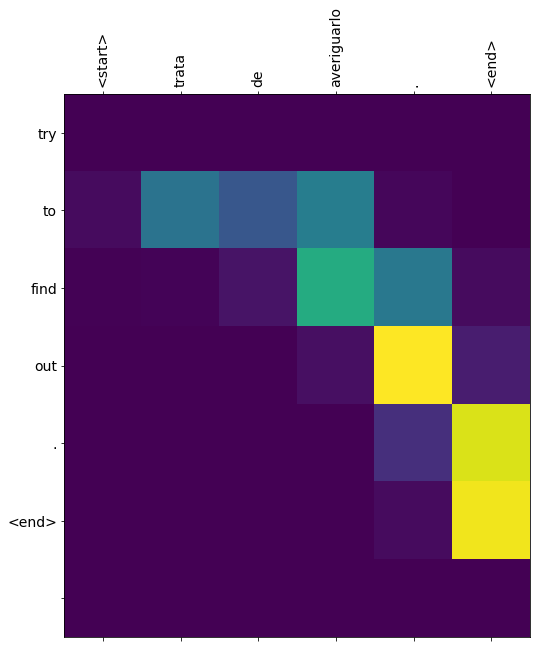

Traducción automática¶
30 min | Última modificación: Abril 6, 2020.
Basado en https://www.tensorflow.org/tutorials/text/text_classification_rnn
[2]:
import tensorflow as tf
import matplotlib.pyplot as plt
import matplotlib.ticker as ticker
from sklearn.model_selection import train_test_split
import unicodedata
import re
import numpy as np
import os
import io
import time
Dataset¶
[3]:
path_to_zip = tf.keras.utils.get_file(
'spa-eng.zip', origin='http://storage.googleapis.com/download.tensorflow.org/data/spa-eng.zip',
extract=True)
path_to_file = os.path.dirname(path_to_zip)+"/spa-eng/spa.txt"
Downloading data from http://storage.googleapis.com/download.tensorflow.org/data/spa-eng.zip
2646016/2638744 [==============================] - 0s 0us/step
[4]:
def unicode_to_ascii(s):
return ''.join(c for c in unicodedata.normalize('NFD', s)
if unicodedata.category(c) != 'Mn')
def preprocess_sentence(w):
w = unicode_to_ascii(w.lower().strip())
w = re.sub(r"([?.!,¿])", r" \1 ", w)
w = re.sub(r'[" "]+', " ", w)
w = re.sub(r"[^a-zA-Z?.!,¿]+", " ", w)
w = w.strip()
w = '<start> ' + w + ' <end>'
return w
[5]:
en_sentence = u"May I borrow this book?"
sp_sentence = u"¿Puedo tomar prestado este libro?"
print(preprocess_sentence(en_sentence))
print(preprocess_sentence(sp_sentence).encode('utf-8'))
<start> may i borrow this book ? <end>
b'<start> \xc2\xbf puedo tomar prestado este libro ? <end>'
[6]:
def create_dataset(path, num_examples):
lines = io.open(path, encoding='UTF-8').read().strip().split('\n')
word_pairs = [[preprocess_sentence(w) for w in l.split('\t')] for l in lines[:num_examples]]
return zip(*word_pairs)
[7]:
en, sp = create_dataset(path_to_file, None)
print(en[-1])
print(sp[-1])
<start> if you want to sound like a native speaker , you must be willing to practice saying the same sentence over and over in the same way that banjo players practice the same phrase over and over until they can play it correctly and at the desired tempo . <end>
<start> si quieres sonar como un hablante nativo , debes estar dispuesto a practicar diciendo la misma frase una y otra vez de la misma manera en que un musico de banjo practica el mismo fraseo una y otra vez hasta que lo puedan tocar correctamente y en el tiempo esperado . <end>
[8]:
def max_length(tensor):
return max(len(t) for t in tensor)
[9]:
def tokenize(lang):
lang_tokenizer = tf.keras.preprocessing.text.Tokenizer(
filters='')
lang_tokenizer.fit_on_texts(lang)
tensor = lang_tokenizer.texts_to_sequences(lang)
tensor = tf.keras.preprocessing.sequence.pad_sequences(tensor,
padding='post')
return tensor, lang_tokenizer
[10]:
def load_dataset(path, num_examples=None):
# creating cleaned input, output pairs
targ_lang, inp_lang = create_dataset(path, num_examples)
input_tensor, inp_lang_tokenizer = tokenize(inp_lang)
target_tensor, targ_lang_tokenizer = tokenize(targ_lang)
return input_tensor, target_tensor, inp_lang_tokenizer, targ_lang_tokenizer
[11]:
num_examples = 30000
input_tensor, target_tensor, inp_lang, targ_lang = load_dataset(path_to_file, num_examples)
max_length_targ, max_length_inp = max_length(target_tensor), max_length(input_tensor)
[12]:
input_tensor_train, input_tensor_val, target_tensor_train, target_tensor_val = train_test_split(input_tensor, target_tensor, test_size=0.2)
print(len(input_tensor_train), len(target_tensor_train), len(input_tensor_val), len(target_tensor_val))
24000 24000 6000 6000
[13]:
def convert(lang, tensor):
for t in tensor:
if t!=0:
print ("%d ----> %s" % (t, lang.index_word[t]))
[14]:
print ("Input Language; index to word mapping")
convert(inp_lang, input_tensor_train[0])
print ()
print ("Target Language; index to word mapping")
convert(targ_lang, target_tensor_train[0])
Input Language; index to word mapping
1 ----> <start>
58 ----> ahora
52 ----> eres
15 ----> un
1217 ----> adulto
3 ----> .
2 ----> <end>
Target Language; index to word mapping
1 ----> <start>
6 ----> you
24 ----> are
58 ----> now
79 ----> an
1026 ----> adult
3 ----> .
2 ----> <end>
[15]:
BUFFER_SIZE = len(input_tensor_train)
BATCH_SIZE = 64
steps_per_epoch = len(input_tensor_train)//BATCH_SIZE
embedding_dim = 256
units = 1024
vocab_inp_size = len(inp_lang.word_index)+1
vocab_tar_size = len(targ_lang.word_index)+1
dataset = tf.data.Dataset.from_tensor_slices((input_tensor_train, target_tensor_train)).shuffle(BUFFER_SIZE)
dataset = dataset.batch(BATCH_SIZE, drop_remainder=True)
[16]:
example_input_batch, example_target_batch = next(iter(dataset))
example_input_batch.shape, example_target_batch.shape
[16]:
(TensorShape([64, 16]), TensorShape([64, 11]))
Codificador/Decodificador¶
[17]:
class Encoder(tf.keras.Model):
def __init__(self, vocab_size, embedding_dim, enc_units, batch_sz):
super(Encoder, self).__init__()
self.batch_sz = batch_sz
self.enc_units = enc_units
self.embedding = tf.keras.layers.Embedding(vocab_size, embedding_dim)
self.gru = tf.keras.layers.GRU(self.enc_units,
return_sequences=True,
return_state=True,
recurrent_initializer='glorot_uniform')
def call(self, x, hidden):
x = self.embedding(x)
output, state = self.gru(x, initial_state = hidden)
return output, state
def initialize_hidden_state(self):
return tf.zeros((self.batch_sz, self.enc_units))
[18]:
encoder = Encoder(vocab_inp_size, embedding_dim, units, BATCH_SIZE)
sample_hidden = encoder.initialize_hidden_state()
sample_output, sample_hidden = encoder(example_input_batch, sample_hidden)
print ('Encoder output shape: (batch size, sequence length, units) {}'.format(sample_output.shape))
print ('Encoder Hidden state shape: (batch size, units) {}'.format(sample_hidden.shape))
Encoder output shape: (batch size, sequence length, units) (64, 16, 1024)
Encoder Hidden state shape: (batch size, units) (64, 1024)
[19]:
class BahdanauAttention(tf.keras.layers.Layer):
def __init__(self, units):
super(BahdanauAttention, self).__init__()
self.W1 = tf.keras.layers.Dense(units)
self.W2 = tf.keras.layers.Dense(units)
self.V = tf.keras.layers.Dense(1)
def call(self, query, values):
query_with_time_axis = tf.expand_dims(query, 1)
score = self.V(tf.nn.tanh(
self.W1(query_with_time_axis) + self.W2(values)))
attention_weights = tf.nn.softmax(score, axis=1)
context_vector = attention_weights * values
context_vector = tf.reduce_sum(context_vector, axis=1)
return context_vector, attention_weights
[20]:
attention_layer = BahdanauAttention(10)
attention_result, attention_weights = attention_layer(sample_hidden, sample_output)
print("Attention result shape: (batch size, units) {}".format(attention_result.shape))
print("Attention weights shape: (batch_size, sequence_length, 1) {}".format(attention_weights.shape))
Attention result shape: (batch size, units) (64, 1024)
Attention weights shape: (batch_size, sequence_length, 1) (64, 16, 1)
[21]:
class Decoder(tf.keras.Model):
def __init__(self, vocab_size, embedding_dim, dec_units, batch_sz):
super(Decoder, self).__init__()
self.batch_sz = batch_sz
self.dec_units = dec_units
self.embedding = tf.keras.layers.Embedding(vocab_size, embedding_dim)
self.gru = tf.keras.layers.GRU(self.dec_units,
return_sequences=True,
return_state=True,
recurrent_initializer='glorot_uniform')
self.fc = tf.keras.layers.Dense(vocab_size)
self.attention = BahdanauAttention(self.dec_units)
def call(self, x, hidden, enc_output):
context_vector, attention_weights = self.attention(hidden, enc_output)
x = self.embedding(x)
x = tf.concat([tf.expand_dims(context_vector, 1), x], axis=-1)
output, state = self.gru(x)
output = tf.reshape(output, (-1, output.shape[2]))
x = self.fc(output)
return x, state, attention_weights
[22]:
decoder = Decoder(vocab_tar_size, embedding_dim, units, BATCH_SIZE)
sample_decoder_output, _, _ = decoder(tf.random.uniform((BATCH_SIZE, 1)),
sample_hidden, sample_output)
print ('Decoder output shape: (batch_size, vocab size) {}'.format(sample_decoder_output.shape))
Decoder output shape: (batch_size, vocab size) (64, 4935)
Optimizador y función de perdida¶
[23]:
optimizer = tf.keras.optimizers.Adam()
loss_object = tf.keras.losses.SparseCategoricalCrossentropy(
from_logits=True, reduction='none')
def loss_function(real, pred):
mask = tf.math.logical_not(tf.math.equal(real, 0))
loss_ = loss_object(real, pred)
mask = tf.cast(mask, dtype=loss_.dtype)
loss_ *= mask
return tf.reduce_mean(loss_)
Checkpoints¶
[24]:
checkpoint_dir = './training_checkpoints'
checkpoint_prefix = os.path.join(checkpoint_dir, "ckpt")
checkpoint = tf.train.Checkpoint(optimizer=optimizer,
encoder=encoder,
decoder=decoder)
Entrenamiento¶
[25]:
@tf.function
def train_step(inp, targ, enc_hidden):
loss = 0
with tf.GradientTape() as tape:
enc_output, enc_hidden = encoder(inp, enc_hidden)
dec_hidden = enc_hidden
dec_input = tf.expand_dims([targ_lang.word_index['<start>']] * BATCH_SIZE, 1)
for t in range(1, targ.shape[1]):
predictions, dec_hidden, _ = decoder(dec_input, dec_hidden, enc_output)
loss += loss_function(targ[:, t], predictions)
dec_input = tf.expand_dims(targ[:, t], 1)
batch_loss = (loss / int(targ.shape[1]))
variables = encoder.trainable_variables + decoder.trainable_variables
gradients = tape.gradient(loss, variables)
optimizer.apply_gradients(zip(gradients, variables))
return batch_loss
[26]:
EPOCHS = 10
for epoch in range(EPOCHS):
start = time.time()
enc_hidden = encoder.initialize_hidden_state()
total_loss = 0
for (batch, (inp, targ)) in enumerate(dataset.take(steps_per_epoch)):
batch_loss = train_step(inp, targ, enc_hidden)
total_loss += batch_loss
if batch % 100 == 0:
print('Epoch {} Batch {} Loss {:.4f}'.format(epoch + 1,
batch,
batch_loss.numpy()))
if (epoch + 1) % 2 == 0:
checkpoint.save(file_prefix = checkpoint_prefix)
print('Epoch {} Loss {:.4f}'.format(epoch + 1,
total_loss / steps_per_epoch))
print('Time taken for 1 epoch {} sec\n'.format(time.time() - start))
Epoch 1 Batch 0 Loss 4.6139
Epoch 1 Batch 100 Loss 2.1421
Epoch 1 Batch 200 Loss 1.8818
Epoch 1 Batch 300 Loss 1.6806
Epoch 1 Loss 2.0198
Time taken for 1 epoch 26.550458192825317 sec
Epoch 2 Batch 0 Loss 1.4935
Epoch 2 Batch 100 Loss 1.4448
Epoch 2 Batch 200 Loss 1.3467
Epoch 2 Batch 300 Loss 1.3227
Epoch 2 Loss 1.3607
Time taken for 1 epoch 15.762913942337036 sec
Epoch 3 Batch 0 Loss 1.1725
Epoch 3 Batch 100 Loss 0.9520
Epoch 3 Batch 200 Loss 0.9721
Epoch 3 Batch 300 Loss 0.8287
Epoch 3 Loss 0.9337
Time taken for 1 epoch 15.383009195327759 sec
Epoch 4 Batch 0 Loss 0.6241
Epoch 4 Batch 100 Loss 0.6497
Epoch 4 Batch 200 Loss 0.5181
Epoch 4 Batch 300 Loss 0.5385
Epoch 4 Loss 0.6220
Time taken for 1 epoch 15.708108186721802 sec
Epoch 5 Batch 0 Loss 0.4818
Epoch 5 Batch 100 Loss 0.4290
Epoch 5 Batch 200 Loss 0.4302
Epoch 5 Batch 300 Loss 0.4590
Epoch 5 Loss 0.4170
Time taken for 1 epoch 15.401605129241943 sec
Epoch 6 Batch 0 Loss 0.2838
Epoch 6 Batch 100 Loss 0.2491
Epoch 6 Batch 200 Loss 0.2473
Epoch 6 Batch 300 Loss 0.3242
Epoch 6 Loss 0.2850
Time taken for 1 epoch 15.689526796340942 sec
Epoch 7 Batch 0 Loss 0.2163
Epoch 7 Batch 100 Loss 0.1828
Epoch 7 Batch 200 Loss 0.1682
Epoch 7 Batch 300 Loss 0.1893
Epoch 7 Loss 0.2034
Time taken for 1 epoch 15.409846305847168 sec
Epoch 8 Batch 0 Loss 0.1449
Epoch 8 Batch 100 Loss 0.1350
Epoch 8 Batch 200 Loss 0.1344
Epoch 8 Batch 300 Loss 0.1631
Epoch 8 Loss 0.1504
Time taken for 1 epoch 15.660495042800903 sec
Epoch 9 Batch 0 Loss 0.0739
Epoch 9 Batch 100 Loss 0.1183
Epoch 9 Batch 200 Loss 0.1550
Epoch 9 Batch 300 Loss 0.1416
Epoch 9 Loss 0.1180
Time taken for 1 epoch 15.552113771438599 sec
Epoch 10 Batch 0 Loss 0.0739
Epoch 10 Batch 100 Loss 0.0691
Epoch 10 Batch 200 Loss 0.0825
Epoch 10 Batch 300 Loss 0.1138
Epoch 10 Loss 0.0958
Time taken for 1 epoch 15.661389112472534 sec
Tranducción¶
[27]:
def evaluate(sentence):
attention_plot = np.zeros((max_length_targ, max_length_inp))
sentence = preprocess_sentence(sentence)
inputs = [inp_lang.word_index[i] for i in sentence.split(' ')]
inputs = tf.keras.preprocessing.sequence.pad_sequences([inputs],
maxlen=max_length_inp,
padding='post')
inputs = tf.convert_to_tensor(inputs)
result = ''
hidden = [tf.zeros((1, units))]
enc_out, enc_hidden = encoder(inputs, hidden)
dec_hidden = enc_hidden
dec_input = tf.expand_dims([targ_lang.word_index['<start>']], 0)
for t in range(max_length_targ):
predictions, dec_hidden, attention_weights = decoder(dec_input,
dec_hidden,
enc_out)
attention_weights = tf.reshape(attention_weights, (-1, ))
attention_plot[t] = attention_weights.numpy()
predicted_id = tf.argmax(predictions[0]).numpy()
result += targ_lang.index_word[predicted_id] + ' '
if targ_lang.index_word[predicted_id] == '<end>':
return result, sentence, attention_plot
dec_input = tf.expand_dims([predicted_id], 0)
return result, sentence, attention_plot
[28]:
def plot_attention(attention, sentence, predicted_sentence):
fig = plt.figure(figsize=(10,10))
ax = fig.add_subplot(1, 1, 1)
ax.matshow(attention, cmap='viridis')
fontdict = {'fontsize': 14}
ax.set_xticklabels([''] + sentence, fontdict=fontdict, rotation=90)
ax.set_yticklabels([''] + predicted_sentence, fontdict=fontdict)
ax.xaxis.set_major_locator(ticker.MultipleLocator(1))
ax.yaxis.set_major_locator(ticker.MultipleLocator(1))
plt.show()
[29]:
def translate(sentence):
result, sentence, attention_plot = evaluate(sentence)
print('Input: %s' % (sentence))
print('Predicted translation: {}'.format(result))
attention_plot = attention_plot[:len(result.split(' ')), :len(sentence.split(' '))]
plot_attention(attention_plot, sentence.split(' '), result.split(' '))
Recuperación del último punto de chequeo¶
[30]:
checkpoint.restore(tf.train.latest_checkpoint(checkpoint_dir))
[30]:
<tensorflow.python.training.tracking.util.CheckpointLoadStatus at 0x7f28523b77b8>
[31]:
translate(u'hace mucho frio aqui.')
Input: <start> hace mucho frio aqui . <end>
Predicted translation: it s very cold here . <end>

[32]:
translate(u'esta es mi vida.')
Input: <start> esta es mi vida . <end>
Predicted translation: this is my life . <end>

[33]:
translate(u'¿todavia estan en casa?')
Input: <start> ¿ todavia estan en casa ? <end>
Predicted translation: are you still at home ? <end>

[34]:
translate(u'trata de averiguarlo.')
Input: <start> trata de averiguarlo . <end>
Predicted translation: try to find out . <end>
